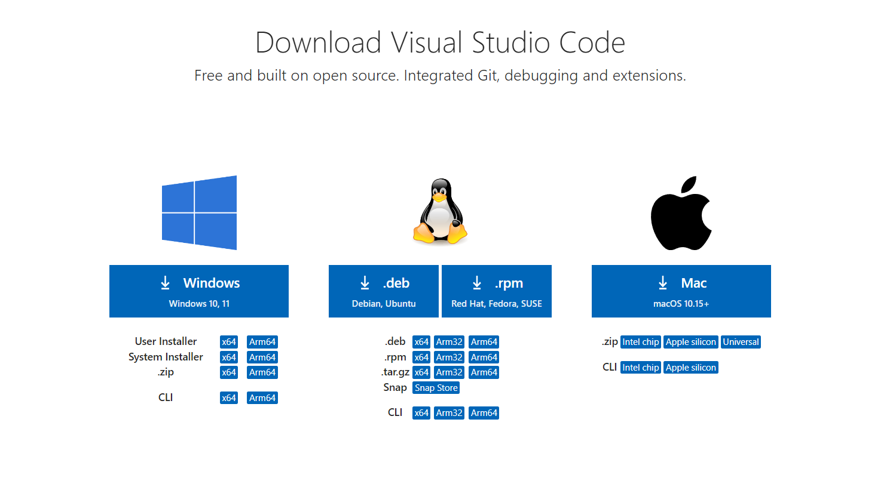

GIT Fundamentals
In the ever-evolving world of web development, proficiency in version control is not just a skill—it's an essential tool of the trade. This project will not only deepen your understanding of Git but also challenge you to document your learning journey. You will create a micro-site, using HTML, CSS, and JavaScript (optionally), to showcase what you've learned about Git. This site itself will be a practical example of your skills, as you manage its development as a project on GitHub. From your initial research to the final deployment on GitHub Pages, every aspect of this project will reflect your mastery of Git in a real-world application. Embrace this opportunity to illustrate your journey, skills, and creativity, setting you on the path to becoming a proficient and versatile web developer.
Setting Up the Environment
Installing Git and VS Code
Installing Git
Install Git from the following link: https://git-scm.com/downloads
Follow the instructions provided in the Git Setup Wizard
Installing VS Code
Install VS Code from the following link: https://code.visualstudio.com/download
Once the download is complete, run the installer VSCodeUserSetup.exe
Configure Git within VS Code
After completing the steps above, create a GitHub account at github.com
Select the GitHub Login otpion in the VS Code sidebar
Follow the steps to log into your account
Creating and Cloning a GitHub Repository
Create a New Repository in GitHub

In GitHub, click "New Repository"

Name the repository

Click "Create Repository"
Clone the Repository using VS Code's Integrated Git Support
Open the Source Control panel in the VS Code sidebar (ctrl+shift+g)
Select "Clone Repository"
Select the GitHub repository you want to work in
Basic Git Operations in VS Code
Perform basic Git Operations through the VS Code GUI
Add, Commit, Push:
Open the Source Control panel in the VS Code sidebar (ctrl+shift+g)
Click the Plus/Add icon next to the changes you want to commit
Click the Commit icon
Write your commit message in the text box or the file that opens
Select the Push option from the Source Control menu
Pull:
Open the Source Control panel in the VS Code sidebar (ctrl+shift+g)
Select the Pull option from the Source Control Menu
Images from the following source: "How to use git add, commit and push in VS Code and Command-line"
Branching with VS Code
Branching is important because it allows multiple instances of a project to occur at once without impacting the main file. You can make changes or test releases in a branch of your main file so that it will not impact your code.
Open the Source Control panel in the VS Code sidebar (ctrl+shift+g)
Open the Branches option and create a new branch
You can switch between branches in the bottom bar by clicking on the branch icon
Working with Remote Repositories
Add and manage remote repositories directly from VS Code.
In order to work in a remote repository, you first need to install the Remote Repositories extention
Click the Remote Window indicator in the bottom left corner of VS Code
Select "Open Remote Repository"
Push to and pull from these remotes using the VS Code interface.
Images from the following source: "How to Open Any Repo in VS Code Without Cloning It"
Pull Requests and Code Review within VS Code
Open the Source Control panel in the VS Code sidebar (ctrl+shift+g)
Open the Pull menu option
Enter a pull message